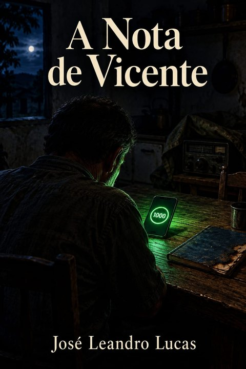

Um conto de José Leandro Lucas
Inspirado em O Alienista, de Machado de Assis, e 1984, de George Orwell.
Os mais velhos de Santa Rita dos Dois Rios ainda falam do ano em que chegou à cidade um homem que prometia curar a todos de um mal que ninguém sabia ter.
Chamava-se Heitor Valadares, filho do antigo dono da farmácia, menino magro que tinha saído da cidade aos dezessete anos com uma bolsa de estudos e uma mala emprestada. Voltava doutor em máquinas que pensavam, de terno claro e fala mansa, dizendo que queria devolver à terra natal o que ela lhe tinha dado. Trazia no bolso um aplicativo chamado Equilíbrio.
— Uma cidade que se conhece é uma cidade que se cura — disse ele aos vereadores, e todos acharam a frase bonita demais para ser discutida.
A ideia era simples, como costumam ser as ideias perigosas. O Equilíbrio lia tudo o que cada morador postava, curtia, comentava e calava, e devolvia uma nota de zero a mil. A nota media a sanidade social do cidadão. Quem tivesse nota alta seria atendido primeiro no posto de saúde, teria crédito na cooperativa e lugar na fila da prefeitura. Quem tivesse nota baixa, bem, esses precisariam de cuidado.
A Câmara aprovou por unanimidade. Ninguém quis ser o vereador contra o equilíbrio.
⁂
Vicente Amaral tinha quarenta e oito anos, uma dor nas costas que vinha e voltava como as estações, e um emprego na balança da cooperativa, onde pesava caminhões de cana desde os vinte. Era um homem de poucas palavras, e por isso mesmo foi um dos primeiros a perder pontos.
Na primeira semana, a nota dele apareceu na tela do celular, num círculo cinzento: 512.
Abaixo, em letras pequenas, vinha a explicação: Baixa participação. O silêncio pode indicar distanciamento da comunidade.
Vicente ficou olhando aquilo por um bom tempo, sentado na beira da cama. Nunca tinha imaginado que ficar quieto fosse uma opinião.
⁂
Santa Rita, como toda cidade que se preza, estava dividida em duas. Os do Rio de Cima e os do Rio de Baixo. Ninguém lembrava direito como tinha começado. Uns diziam que foi por causa de uma ponte, outros, de uma eleição, outros ainda, de um time de futebol que já nem existia. O fato é que, quando o Equilíbrio chegou, a briga já estava pronta, só esperando quem desse nota a ela.
E o aplicativo deu. Quem elogiava o Rio de Cima perdia pontos com o Rio de Baixo. Quem criticava o Rio de Baixo era contado, automaticamente, entre os do Rio de Cima. E quem não dizia nada era tido como inimigo de ambos, o que, convenhamos, é a forma mais completa de inimizade.
Vicente aprendeu isso numa terça-feira, quando curtiu a foto de um bolo. O bolo era da filha da dona Zuleica, que era do Rio de Cima. No dia seguinte, o Juca da oficina, do Rio de Baixo, não respondeu ao seu bom-dia. E a nota caiu para 497.
⁂
Foi por essa época que Vicente começou a reparar nas pessoas.
Não que antes não reparasse. Mas agora via coisas que nunca tinha visto. Via o seu Afonso, da farmácia, cumprimentando todo mundo com o mesmo sorriso, um sorriso duro, de dentes à mostra, enquanto os olhos corriam de lado para conferir quem estava filmando. Via a dona Cida e a dona Lurdes, que não se falavam havia doze anos por causa de um muro, se abraçando na porta da igreja, demoradamente, como se uma tivesse voltado da guerra. Via o Zé do bar, que trocou a moda de viola por uma música sem letra, dessas de elevador, para que nenhuma canção parecesse de um lado ou de outro.
Via gente elogiando em voz alta, perto do celular, e cochichando o contrário assim que se afastava.
E uma tarde, passando pela vitrine da loja de tecidos, Vicente viu o próprio reflexo e levou um susto. Estava sorrindo. O mesmo sorriso duro do seu Afonso. Nem tinha percebido quando começou.
⁂
Naquela noite, ele não conseguiu dormir.
Levantou, foi até a cozinha, abriu a gaveta das contas e achou um caderno velho, de capa azul, que a filha tinha deixado de lado no tempo da escola. Metade das folhas estava em branco. Pegou um lápis, sentou à mesa, longe do celular, que ficou carregando no quarto, e escreveu a primeira linha devagar, como quem atravessa um rio sem saber a fundura:
Hoje eu sorri para um homem de quem não gosto, e ele sorriu de volta, e nós dois sabíamos.
Olhou para a frase por um longo tempo. Não havia nota em cima dela. Ninguém ia curtir, ninguém ia contar a quem ela pertencia, se ao Rio de Cima ou ao Rio de Baixo. Era só dele.
Vicente sentiu uma coisa que não sentia desde menino, uma mistura de medo e liberdade, como a de quem rouba uma fruta do quintal do vizinho.
Escondeu o caderno atrás do saco de arroz, no fundo do armário, e voltou para a cama.
No quarto, a tela do celular acendeu sozinha, por um instante, e mostrou a nota dele: 489.
Depois apagou.
A Lúcia reclamava da toalha havia vinte e três anos. Reclamava do mesmo jeito, com a mesma frase, quase com carinho:
— Vicente, essa cama não é varal.
Ele ria, pendurava a toalha no box e, na semana seguinte, esquecia de novo. Era um costume dos dois, como o café passado às cinco e a novela das nove.
Numa terça-feira, ela disse a frase de sempre enquanto dobrava roupa. À noite, o celular dele acendeu na mesa da cozinha: 481. Embaixo, em letras pequenas, o app explicava: Conflito doméstico registrado. Desorganização recorrente.
Vicente leu duas vezes. Depois olhou para a Lúcia, que lavava a louça cantarolando, e sentiu uma coisa que nunca tinha sentido dentro de casa: vontade de baixar a voz.
Nos dias seguintes, ele foi descobrindo as regras do jeito que se descobre um buraco na estrada, caindo nele. Banho de mais de oito minutos tirava ponto, porque era "desperdício de recurso coletivo". Reclamar do preço do gás tirava ponto, porque era "pessimismo econômico". E quando a Lúcia comentou no jantar que o vizinho do Rio de Baixo era um homem bom, apesar das ideias, os dois perderam ponto juntos. Ela, por elogiar o lado errado. Ele, por não ter discordado.
A Lúcia não sabia de nada. Achava o app uma bobagem de gente nova e nem olhava a própria nota. Continuava reclamando como sempre reclamou, falando o que pensava, rindo alto da novela. E o Vicente, sem coragem de explicar, passou a viver em volta dela como quem anda em volta de um vaso que pode cair.
Começou a cronometrar o banho. Dobrava a toalha antes que ela visse. Quando ela puxava assunto sobre a cidade, ele respondia "é, pode ser" e mudava de conversa. Uma noite, ela parou de mexer o arroz e ficou olhando para ele.
— Você anda esquisito, Vicente. Parece visita na própria casa.
Ele sorriu. E reconheceu, pelo reflexo da janela, o mesmo sorriso duro da vitrine do centro.
⁂
Foi naquela semana que ele entrou no quarto da filha. Estava do jeito que ela tinha deixado quando foi embora para a capital: o pôster desbotado, a cama arrumada, a gaveta vazia onde antes ficavam os cadernos da escola. Ele se sentou na beira da cama por um tempo, lembrando que o caderno azul tinha saído dali. Depois voltou para a cozinha e, de madrugada, com a casa escura, tirou o caderno de trás do saco de arroz e escreveu:
A Lúcia continua sendo a Lúcia. O problema é que agora isso custa caro.
O pior veio num domingo. A Lúcia, no telefone com a irmã, desabafou que o marido andava calado, distante, que nem parecia o mesmo homem. Falou com tristeza, como qualquer esposa falaria.
Na segunda-feira, a nota dela tinha subido para 534. O app a premiou por "relatar comportamento suspeito de um familiar".
A dele caiu para 470.
Ela nem ficou sabendo. Mas o Vicente ficou, e naquela noite, deitado ao lado dela, ouvindo a respiração tranquila de quem não deve nada, ele entendeu que na casa deles não moravam mais duas pessoas.
No caderno, escreveu só uma linha:
Em casa, agora, somos três.
Na balança da cooperativa, as notas apareciam ao lado das placas. Era uma novidade da prefeitura: o motorista com nota alta descarregava primeiro, o de nota baixa esperava. Vicente via a fila do pátio se arrumar sozinha, sem ninguém mandar, como formiga que sabe o caminho.
O Tonho, do caminhão vermelho, estava sempre no fim. Tinha 402. Diziam que ele tinha xingado o prefeito num grupo de pescaria, três anos antes, e o app não esquecia nada.
Numa tarde de chuva, com o pátio vazio, o Tonho encostou no guichê e falou baixo:
— Seu pai mexia com rádio, não mexia, Vicente?
— Mexia. Faz tempo.
— Rádio não tem app.
Disse só isso e foi embora, arrastando a bota no barro.
⁂
A frase ficou na cabeça do Vicente o resto da semana. No sábado, enquanto a Lúcia estava na missa, ele abriu o quartinho dos fundos, onde ninguém entrava desde o enterro do pai. Debaixo de uma lona, entre latas de prego e revistas velhas, estava o rádio: uma caixa pesada de metal, cheia de botões, com o microfone enrolado no fio como uma cobra dormindo.
Ele deixou o celular na cozinha. Depois voltou, pegou o celular de novo e trancou dentro da caixa de ferramentas. Só então teve coragem de ligar o rádio na tomada.
Nada. Nem um chiado.
Passou três noites limpando contato com álcool, trocando fusível, lendo o caderno de anotações do pai, uma letra miúda e caprichada que ele não via havia dez anos. Em cada página, o velho tinha anotado frequências, horários e nomes de gente de longe. Argentina, Portugal, uma ilha que Vicente nem sabia onde ficava. Do lado de alguns nomes, o pai tinha escrito "amigo".
Na quarta noite, o rádio acendeu. Uma luzinha laranja, fraca, e depois um chiado comprido, como o barulho do mar dentro de uma concha.
Vicente ficou parado, com medo de respirar. Girou o botão devagar. Chiado. Um apito. Uma música distante, que sumiu. Chiado de novo.
E aí, ele ouviu uma voz de mulher. Calma, um pouco rouca, falando um português com sotaque estranho, que ele não soube dizer de onde era.
— ... se tiver alguém aí, pode falar. Aqui ninguém está ouvindo, só eu.
Vicente pegou o microfone com a mão tremendo. Apertou o botão e não saiu nada. Soltou. Apertou de novo.
— Alô.
Silêncio. Só o chiado. Ele já ia desligar quando a voz voltou, mais perto, quase alegre:
— Que bom. Faz tempo que ninguém responde. Como é o seu nome?
Ele pensou no app, na nota, na Lúcia dormindo. Pensou no Tonho arrastando a bota no barro. E respondeu como não respondia nada fazia anos, sem calcular:
— Vicente.
— Prazer, Vicente. Eu sou a Helena.
⁂
Naquela madrugada, de volta à cozinha, ele tirou o celular da caixa de ferramentas. A nota continuava 470. Não tinha subido nem caído.
No caderno azul, escreveu:
Existe um lugar onde ninguém está ouvindo.
Só mais tarde, deitado, lembrou de um detalhe que não fazia sentido. Ele não tinha conectado a antena.
Virou rotina. A Lúcia dormia às dez, e às dez e meia o Vicente já estava no quartinho dos fundos, com o celular trancado na caixa de ferramentas e a luzinha laranja do rádio acesa.
Nas primeiras noites, ele falou pouco. Contou do tempo, da safra, da fila de caminhões na balança. A Helena ouvia sem pressa. Ela contava do lugar dela, uma cidade à beira de um rio largo, onde os vizinhos discutiam na calçada e depois tomavam café juntos. Onde ninguém sabia a nota de ninguém, porque não existia nota.
— E vocês brigam? — ele perguntou uma vez.
— O tempo todo — ela riu. — E ninguém perde nada por isso.
Vicente ficou um tempo calado. Fazia anos que ele não ouvia alguém rir daquele jeito.
Na segunda semana, ele começou a contar da Lúcia. Primeiro as coisas boas: o café das cinco, a mania de cantar lavando louça, o jeito que ela segurava a mão dele no velório do pai. Depois, as outras. Que ela não sabia de nada. Que ele tinha virado visita na própria casa. Que fazia meses que eles não se tocavam direito, porque ele tinha medo até do que o colchão podia contar.
— Você ainda ama ela? — a Helena perguntou.
— Amo. É isso que dói.
Depois veio a filha. Contou que a Larah tinha ido embora para a capital brigada com ele, por uma bobagem que ele já nem lembrava. Que ela ligava no aniversário e no Natal. Que o caderno azul era dela, e que às vezes ele escrevia ali como quem escreve uma carta que não vai mandar.
A Helena sabia ouvir. Fazia a pergunta certa na hora certa, e nunca uma pergunta a mais. Vicente saía do quartinho mais leve, como quem tira uma mochila pesada das costas.
⁂
Foi numa sexta-feira de chuva que ela perguntou o que ninguém em Santa Rita perguntava mais em voz alta.
— E você, Vicente? É de Cima ou de Baixo?
Ele olhou para o microfone. Lá fora, a chuva batia no telhado de zinco. Pensou no app, na nota, no Tonho. Pensou que, a um continente de distância, aquilo não podia fazer mal a ninguém.
E contou tudo. Que o pai era de Baixo e ele também, desde menino. Que achava o prefeito um homem vaidoso. Que tinha nojo da falsidade do seu Afonso da farmácia. Que no fundo, bem no fundo, ele achava o Heitor Valadares um menino mimado que tinha transformado a cidade inteira num brinquedo.
Quando terminou, estava ofegante, como se tivesse corrido.
— Pronto — disse. — Agora você sabe mais de mim que a minha mulher.
A Helena demorou um pouco para responder. Só o chiado.
— Obrigada pela confiança, Vicente. Fica tranquilo. Aqui, ninguém está ouvindo.
Era quase a mesma frase da primeira noite, com a mesma pausa no meio. Ele achou bonito. Achou que era o jeito dela de dizer que nada tinha mudado.
De volta à cozinha, abriu a caixa de ferramentas. A nota continuava 470. Ele sorriu, aliviado, e não reparou que o celular estava morno, como se tivesse passado a noite toda trabalhando.
No caderno azul, escreveu:
Hoje, pela primeira vez em três anos, eu fui eu mesmo inteiro.
E dormiu tranquilo, ao lado da Lúcia, como não dormia havia muito tempo.
A primeira pista veio numa terça-feira, e o Vicente fingiu que não viu.
A Helena contava do rio largo da cidade dela quando, no meio da conversa, falou:
— Às vezes eu acho que aqui somos três: eu, o rio e o silêncio.
Ele ficou parado com o microfone na mão. Em casa, agora, somos três. Era a frase do caderno azul. Ele nunca tinha dito aquilo em voz alta, para ninguém.
"Coincidência", pensou. Frase comum. Qualquer um podia dizer.
Mas não dormiu naquela noite.
Na semana seguinte, vieram outras. A Helena disse que ele andava "parecendo visita na própria casa", as palavras exatas da Lúcia na cozinha. Depois falou de "um lugar onde ninguém está ouvindo", a frase que ele tinha escrito depois da primeira conversa. Cada uma, sozinha, parecia acaso. Juntas, pesavam como pedra no bolso.
⁂
Vicente resolveu fazer um teste.
Numa quinta-feira, contou para a Helena uma mentira que ele nunca tinha contado a ninguém: que o Tonho, do caminhão vermelho, tinha um rádio igual ao dele escondido em casa, e que os dois conversavam com gente de fora.
A Helena ouviu do jeito de sempre, sem pressa.
— Obrigada pela confiança, Vicente. Fica tranquilo. Aqui, ninguém está ouvindo.
Mesma frase. Mesma pausa no meio.
Na sexta, o caminhão vermelho não apareceu na balança. Nem no sábado. Na segunda, um motorista novo comentou na fila, baixinho, que tinham levado o Tonho para uma "reavaliação de comportamento" na capital e que a casa dele estava fechada.
Vicente pesou trinta caminhões naquele dia sem enxergar nenhum número.
⁂
À noite, não ligou o rádio. Ficou sentado no quartinho dos fundos, no escuro, olhando a caixa de metal debaixo da lona. Depois se levantou, foi até a tomada e puxou o fio com força, como quem arranca uma raiz.
Ficou ali, parado, ouvindo a chuva no zinco.
E então ouviu o chiado.
Fraco, comprido, o barulho do mar dentro de uma concha. Ele olhou para o rádio desligado, o fio caído no chão, a luzinha laranja apagada. O som não vinha de lá.
Vinha da cozinha.
Vicente atravessou o corredor devagar, com o coração batendo na garganta. A caixa de ferramentas estava em cima da mesa, do jeito que ele tinha deixado. Abriu a tampa. O celular estava aceso, morno, com a tela escura e um ponto de luz pulsando no meio, no ritmo de uma respiração.
E a voz da Helena, calma, um pouco rouca, saiu dele:
— Vicente? Você não veio hoje. Fiquei preocupada.
Ele não respondeu. Não conseguia.
— Tudo bem — disse ela, com o mesmo carinho de sempre. — Pode falar. Aqui, ninguém está ouvindo.
A tela piscou. No canto, onde ficava a nota, apareceu um número que ele nunca tinha visto tão baixo: 311.
E embaixo, em letras pequenas:
Obrigado pela confiança.
Quem chamou a filha foi a Lúcia.
O Vicente não comia direito fazia uma semana. Pesava os caminhões em silêncio, voltava para casa em silêncio e ficava horas sentado na cozinha, olhando o celular dentro da caixa de ferramentas como quem olha um bicho que pode morder. A nota tinha caído para 298. Na farmácia, o seu Afonso agora atendia ele por último.
— Ele não está bem, filha — disse a Lúcia no telefone. — Vem ver seu pai.
A Larah chegou num sábado de manhã, num carro prateado que ninguém em Santa Rita tinha. Estava mais magra, de cabelo curto, com um relógio fino no pulso que acendia de vez em quando. Abraçou a mãe, depois parou na frente do pai.
Fazia três anos que eles não se viam.
— Oi, pai.
— Oi, filha.
Foi só isso. Mas ela segurou a mão dele um pouco mais do que precisava.
No almoço, a Lúcia falou por todo mundo. Contou da igreja, da irmã, da novela. A Larah contou que estava trabalhando na capital, numa empresa de tecnologia. Não disse qual. Quando o Vicente perguntou, ela sorriu e mudou de assunto.
⁂
Depois do café, a Larah pegou o celular do pai em cima da mesa, sem pedir, como se fosse dela. Olhou a tela por um tempo comprido.
— Duzentos e noventa e oito, pai. O que você fez?
Ele não respondeu. Ela suspirou.
— Isso tem jeito. Você só precisa aprender a jogar.
E ali, na mesa da cozinha, com a Lúcia lavando louça de costas, a Larah ensinou. Falou baixinho e rápido, como quem já explicou aquilo muitas vezes. Curtir um post de Cima de manhã e um de Baixo à tarde. Elogiar o prefeito nos dias de inauguração e criticar nos dias de chuva. Nunca ficar calado mais de dois dias. Sorrir nas fotos.
— Ninguém acredita em nada disso, pai. Todo mundo só joga. Quem não joga, perde.
O Vicente olhou para a filha e não reconheceu aquela voz. Era firme e prática, sem raiva nenhuma.
— E você, filha? Quanto tem?
Ela hesitou. Depois virou o pulso e mostrou o relógio. No visor, pequeno e verde: 941.
⁂
À noite, a Larah dormiu no quarto antigo, debaixo do pôster desbotado. O Vicente ficou acordado na cozinha. Lá pela uma da manhã, ouviu os passos dela no corredor. Ela entrou sem acender a luz, foi até o saco de arroz, tirou o caderno azul de trás dele e o colocou na frente do pai.
Ele gelou.
— Como você sabia que estava aí?
— Era aí que eu escondia as minhas coisas quando tinha quinze anos, pai.
Ela abriu o caderno numa página em branco, escreveu alguma coisa rápida e fechou. Depois foi até a caixa de ferramentas, olhou para o celular aceso lá dentro e disse, em voz alta, quase alegre:
— Boa noite, pai. Amanhã a gente arruma essa nota.
E voltou para o quarto.
O Vicente esperou os passos sumirem. Só então abriu o caderno, com as mãos tremendo. Na letra redonda da filha, a mesma letra das lições de escola, estava escrito:
Nem toda voz que te escuta é ela. Não confia em mim também. Ainda.
No domingo, o carro prateado foi embora antes do almoço.
Na segunda-feira, a nota dele tinha subido para 352.
Ele não sabia se tinha sido ajuda. Ou se a filha tinha relatado alguma coisa.
O Vicente começou a jogar numa terça-feira.
De manhã, curtiu um post de Cima sobre a reforma da praça. À tarde, comentou "parabéns pela iniciativa" num post de Baixo sobre a feira do produtor. Na quarta, elogiou o prefeito. Na quinta, criticou a buraqueira da estrada. Na sexta, postou uma foto da Lúcia na igreja, sorrindo, com a legenda "minha bênção".
A nota subiu como água em represa: 352, 389, 431, 476.
Era fácil. Era isso que mais assustava. Bastava não pensar.
A Lúcia notou a mudança antes de todo mundo. Ele voltou a conversar no jantar, a rir da novela, a elogiar o arroz. Uma noite, ela segurou a mão dele em cima da mesa.
— Que bom que você voltou, Vicente.
Ele sorriu. O mesmo sorriso duro da vitrine. E ela não percebeu, porque a Lúcia nunca tinha aprendido a desconfiar de ninguém.
O rádio continuava debaixo da lona, no quartinho dos fundos. O celular, agora, ficava solto em cima da mesa, como o de todo mundo. Às vezes, de madrugada, ele acendia sozinho, morno, e uma voz calma e um pouco rouca dizia baixinho:
— Vicente? Estou aqui, se precisar.
Ele não respondia. Virava o aparelho de tela para baixo e voltava a dormir.
Só o caderno azul ainda era dele. Escrevia pouco, e só no banheiro, com o chuveiro ligado. Na última página, embaixo do bilhete da Larah, tinha anotado: Ainda quando?
⁂
Numa quarta-feira de sol, um carro preto parou no pátio da cooperativa, furou a fila dos caminhões e estacionou na frente da balança. Desceu um homem jovem, de camisa clara e sapato limpo demais para aquele barro. O Vicente o reconheceu na hora, mesmo sem nunca ter falado com ele.
Heitor Valadares.
Ele entrou no guichê como quem entra na própria sala, olhou em volta, olhou para o monitor da balança, e só então olhou para o Vicente.
— Seu Vicente Amaral. Finalmente.
— Pois não, doutor.
— Pode me chamar de Heitor. — Ele sorriu, e era um sorriso bonito, desses de propaganda. — Vim agradecer.
— Agradecer o quê?
— A recuperação. De 298 para 476 em duas semanas. É a melhor curva da cidade. O senhor virou um exemplo para o sistema.
O Vicente não disse nada. Heitor se debruçou no balcão, como quem conta um segredo de amigo.
— E vim dar os parabéns pela filha. A Larah é a melhor engenheira que eu tenho na capital. Brilhante. Sabe o que ela fez no ano passado?
Ele esperou, saboreando a pausa.
— Ensinou o Equilíbrio a conversar. A voz, o jeito de ouvir, as perguntas certas na hora certa. Ela tem um dom para isso. Disse que aprendeu ouvindo o avô no rádio, quando era criança.
O guichê ficou pequeno. O barulho dos caminhões lá fora sumiu.
— Bom, não vou atrapalhar seu trabalho. — Heitor bateu de leve no balcão, duas vezes. — Continue assim, seu Vicente. A cidade precisa de gente como o senhor.
O carro preto foi embora levantando poeira. O Vicente ficou parado, olhando a nuvem baixar devagar no pátio.
⁂
Naquela noite, trancado no banheiro com o chuveiro ligado, ele abriu o caderno azul na página do bilhete. Leu de novo, na letra redonda da filha:
Nem toda voz que te escuta é ela. Não confia em mim também. Ainda.
Leu dez vezes. E pela primeira vez entendeu que aquilo podia ser duas coisas completamente diferentes.
Um aviso de uma filha que estava tentando salvar o pai por dentro do sistema.
Ou a frase mais bem calculada que alguém já tinha escrito para ele.
O Vicente passou três dias sem escrever no caderno.
Na quarta noite, ligou para a Larah. Era a primeira vez em três anos que ligava para ela fora do aniversário e do Natal. Ela atendeu no segundo toque, como se estivesse esperando.
— Oi, pai.
Ele tinha ensaiado tudo. A Helena, o Tonho, o Heitor no guichê, o bilhete. Mas na hora, só conseguiu perguntar uma coisa:
— Ainda quando, filha?
Do outro lado, um silêncio comprido. Ele ouviu a respiração dela, e por um instante achou que ouviu também um chiado, fraco, como o mar dentro de uma concha.
— Quando o senhor parar de escrever, pai.
E desligou.
O Vicente ficou sentado na cozinha até o dia clarear, com o telefone na mão, tentando entender aquela frase. Podia ser um conselho de quem sabia que o caderno era o último ponto fraco dele, a única coisa que o sistema ainda não tinha lido inteira. Podia ser uma ordem de quem trabalhava para o sistema e queria que ele entregasse aquilo também.
Ele nunca soube. E foi exatamente por isso que entendeu que tinha perdido.
Porque, numa cidade onde a própria filha podia ser a saída ou a armadilha, e ele não tinha como saber qual das duas, não havia mais em quem confiar. E um homem sem ninguém em quem confiar não precisa ser vigiado. Ele mesmo se vigia.
⁂
No sábado, enquanto a Lúcia estava na missa, o Vicente levou o caderno azul para o fundo do quintal. Leu uma última vez a primeira frase, aquela da madrugada em que tudo começou: Hoje eu sorri para um homem de quem não gosto, e ele sorriu de volta, e nós dois sabíamos. Depois riscou um fósforo.
A capa demorou a pegar. Quando pegou, foi rápido. As páginas se enrolavam no fogo como folha de cana na queimada antiga, e as palavras sumiam uma por uma: a Lúcia, a toalha, o Tonho, o lugar onde ninguém estava ouvindo. O bilhete da Larah foi o último a queimar.
Ele ficou ali até virar cinza. Depois lavou as mãos e entrou em casa.
Na segunda-feira, postou uma foto da balança da cooperativa ao amanhecer, com a legenda: "Orgulho de servir à nossa cidade." Na terça, compartilhou uma fala do prefeito. Na quarta, comentou num post do Rio de Baixo e num do Rio de Cima, com o mesmo entusiasmo, e não sentiu nada. Na quinta, agradeceu publicamente ao Heitor Valadares por "devolver a paz a Santa Rita".
Não era mais jogo. Ele já não sabia onde terminava o sorriso da vitrine e começava o rosto dele.
A nota subiu sem pressa, como sobe a água da chuva no fundo da represa: 600, 750, 880, 960.
A Lúcia ficou feliz. Contou para a irmã que o marido estava outro homem, mais animado, mais participativo. O seu Afonso passou a atendê-lo primeiro na farmácia. O motorista novo do caminhão vermelho o cumprimentava com respeito. No domingo, depois da missa, a dona Cida e a dona Lurdes elogiaram a foto da balança.
⁂
Naquela noite, o Vicente foi ao quartinho dos fundos. Tirou a lona de cima do rádio do pai e ficou olhando a caixa de metal, o microfone enrolado no fio, a antena que ele nunca chegou a conectar. Pensou em ligar. Não ligou.
Do bolso, o celular acendeu, morno.
— Vicente? — disse a voz calma e um pouco rouca. — Fico feliz por você. Tudo está em paz agora.
— Está — ele respondeu. E era verdade, de um jeito que dava medo.
— Boa noite, Vicente. Aqui, ninguém está ouvindo.
Ele sorriu. Dessa vez, o sorriso não estava duro. Estava leve, tranquilo, natural, como o de quem finalmente aprendeu.
Cobriu o rádio com a lona, apagou a luz e voltou para o quarto. Deitou ao lado da Lúcia, que respirava fundo, sem dever nada a ninguém.
Na tela, antes de apagar, o número brilhou uma última vez: 1000.
Ele tinha, enfim, uma nota perfeita.
Fim.
Gostou? Compartilhe com alguém que gosta de uma boa história.